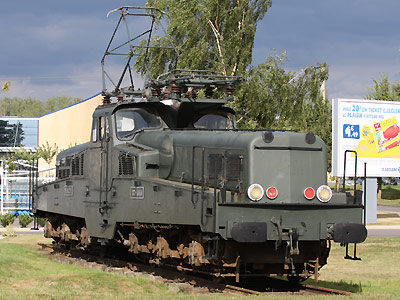

Ferrovia - 05 Juin 2012
CC 14100
Série de 102 locomotives construites de 1954 à 1958 pour tirer les très lourds trains de charbon et de minerai sur la transversale Nord-Est entre Valenciennes et Thionville.
Dernières machines radiées en 1995.
Quelques données techniques
Constructeur : Alsthom, Fives Lille, CEM
Tension d'alimentation : monophasé 25 kV, 50 Hz
Chaîne de traction : groupe tournant mono-continu
Motorisation : 3 moteurs à courant continu par bogie
Puissance totale : 1860 kW
Vitesse limite : 60 km/h
Longueur : 18,89 m
Masse : 127t
Pantographes : 2 MT
Pour plus d'info :
La fiche CC 14100 sur Wikipedia
L'inventaire des CC 14100 sur Trains du Sud-Ouest

La CC 14161 exposée au Supermarché Leclerc de Conflans Jarny (18/08/2008)